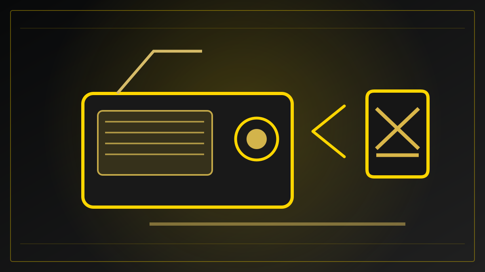

REDAKSJONELT UTKAST – IKKE PUBLISERT
Samfunnssikkerhet · Planlagt fredag 30. oktober 2026
Hva gjør du når mobilnettet og internett forsvinner?
Bare 31 prosent sier at husstanden er godt forberedt på et lengre bortfall av mobilnett og internett, ifølge en DSB-undersøkelse. Egenberedskapsuka handler i år om hvordan vi får informasjon når nettet svikter.

Når skjermen blir stille
Det er vanskelig å forestille seg en vanlig norsk hverdag uten mobilnett og internett. Vi bruker nettet til å ringe, sende meldinger, betale, finne veien og lese oppdateringer. Nettopp derfor har Direktoratet for samfunnssikkerhet og beredskap (DSB) valgt bortfall av elektronisk kommunikasjon som tema for Egenberedskapsuka 2026, som varer fra 26. oktober til 1. november.
En undersøkelse utført av Norstat på oppdrag fra DSB viser at bare 31 prosent opplever at husstanden er godt eller svært godt forberedt på et lengre bortfall av mobilnett og internett. Det er et selvrapportert tall – ikke en teknisk kontroll av beredskapen i norske hjem.
Mange vet om rådene, færre vet hvor de skal gå
Ni av ti i undersøkelsen kjenner til myndighetenes anbefaling om å kunne klare seg hjemme i en uke ved en alvorlig hendelse. Men kun 29 prosent oppgir at de vet hvor de kan møte opp for å få informasjon fra kommunen dersom elektronisk kommunikasjon ikke fungerer normalt.
En slik forskjell viser hvorfor egenberedskap handler om mer enn vann, mat og batterier. Informasjon er også en del av beredskapen. Hvis kartet, meldingsappen og kommunens nettside ikke er tilgjengelig, blir andre kanaler viktige.
Radio, strøm og en avtalt møteplass
DSB og Nasjonal kommunikasjonsmyndighet (Nkom) oppfordrer folk til å ha en plan for alternativ kommunikasjon. En DAB-radio som fungerer med batteri, sveiv eller solceller kan gi informasjon selv om mobilnettet er utilgjengelig. Ifølge undersøkelsen har 47 prosent av befolkningen slik radiotilgang, mens 54 prosent har en oppladet batteribank tilgjengelig.
Myndighetene anbefaler også at familier og andre nærstående avtaler hvordan de skal finne hverandre dersom de ikke får kontakt via telefon. I områder der kommunene etablerer fysiske informasjonspunkter, er det viktig å vite hvor disse finnes før en hendelse inntreffer.
Kan man betale hvis nettet er borte?
Et bortfall kan påvirke flere systemer samtidig. Hvilke betalingsløsninger som fungerer, avhenger av både strømforsyning og tekniske tjenester. Derfor bør man undersøke anbefalinger fra egne banker og myndigheter om alternative betalingsmåter, og ikke gå ut fra at alle kortterminaler fungerer som normalt i en krise.
Hvorvidt nødetatene fortsatt kan kontaktes, vil også avhenge av situasjonen. Det er ingen grunn til å slå fast at alle telefonforbindelser vil falle bort samtidig; poenget med beredskapen er å ha flere muligheter hvis den vanlige løsningen svikter.
Hva bør du gjøre denne uken?
Start med å finne informasjonen fra kommunen du bor i. Sjekk hvor du eventuelt kan møte opp ved et langvarig kommunikasjonsbrudd. Sørg for å ha nødvendige telefonnumre og avtaler også utenfor mobiltelefonen, og undersøk om du har tilgang til en batteridrevet radio og reservestrøm.
Det er enkle forberedelser, men de gjør en stor forskjell når infrastrukturen vi vanligvis ikke tenker på, plutselig ikke fungerer. Egenberedskapsuka varer bare noen dager. Den egentlige prøven kommer først den dagen informasjonen ikke ligger ett tastetrykk unna.